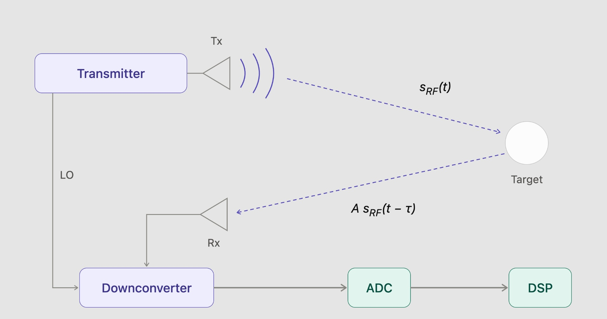
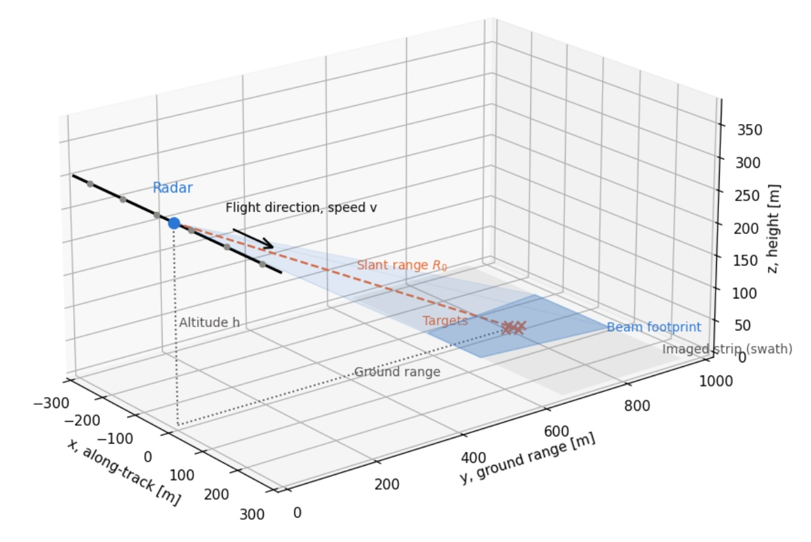

ABOUT ME
PhD Electrical Engineering, Michigan Technological University, 2016
MS Telecommunications Engineering, University of Pisa, 2011
BS Telecommunications Engineering, University of Pisa, 2008
I hold a PhD in electrical engineering. My early career focused on academic research in radar (MIMO radars) and optical sensing (computational imaging). After a postdoctoral research position, I moved into industry. For my full professional experience and publications, see LinkedIn and Google Scholar.
My work spans the engineering process, from understanding operational needs and defining system requirements to design, prototyping, integration, and validation. I am interested in both the technical details and the wider system context: what problem are we trying to solve, which trade-offs matter, and how do we know the solution works?
Aside from engineering, I spend some of my time at the local ice arenas, both playing and officiating ice hockey.
COOL STUFF
Projects & tutorials
Clicking on the links below will redirect you to a specific Github repo. Checkout the README and then clone the repo to play with the scripts. Code was written in Python and requires standard modules like numpy, scipy and matplotlib.

RADAR BASICSFMCW Radar Processing
How does an FMCW radar "see" a target?
View project ↗HMPAR Rx DSP
This was my PhD dissertation, discussing the receive signal processing of a hybrid phased-array/MIMO (HMPAR) architecture.

RADAR IMAGINGSynthetic Aperture Radar
SAR 101: Data acquisition and processing, assuming a stripmap configuration.
View project ↗